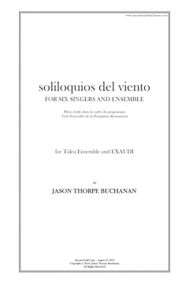

VIEW SCORE:
- 
ABOUT THE WORK:
soliloquios del viento (2016)
Instrumentation: soprano, mezzo-soprano, counter-tenor, tenor, baritone, bass-baritone, bass flute, bass clarinet, tenor saxophone, percussion, piano, violin, viola, and cello
Dedication: For the Talea Ensemble and EXAUDI Vocal Ensemble
Commission & Awards: Commissioned by Voix Nouvelles de la Fondation Royaumont
World Premiere: Royaumont Abbey, France - Talea Ensemble & Exaudi - September 9, 2016
Purchasing information: Digital Score PDF: $34.95, Score and Parts (RENTAL ONLY): $149.95
Contact: jasontbuchanan[at]gmail.com
PROGRAM NOTES:
soliloquios del viento was commissioned by Royaumont Académie Voix Nouvelles, written in August of 2016 and premiered by the Talea Ensemble & EXAUDI on September 9, 2016, conducted by James Baker. This fourteen-minute work is a meditation on eight poems of Pablo Neruda, reflecting love, distance, and despair. The six singers are set against eight instrumentalists whose fragile and often voiceless sonorities gently color and obscure the murmuring of the text and pointillisic vocal material. The Spanish text is predominantly unintelligible, with the content of Neruda’s words instead conjured by the composite texture. He writes of two lovers, their romance characterized by abrasion – a rendezvous between two scorched, ascetic souls, who consume and destroy one another, entangled yet divided by both sublime transfiguration and inexorable chaos. <!— end notes preview —>Neruda’s texts evoke not only the conflict between darkness and light in both persons, but through this lens, the experience of being confronted with the subjectivity of another’s consciousness. That otherness is manifest in lurid, destructive passions, revealing mutual incoherence, frailty, and sophism beyond endurance. Each poem seems to present discrete, parallel scenarios, some in which each is awoken by their confrontation rather than destroyed – in others suffering to the point of intolerable anguish and desolation. Eroticism and sunderance run throughout Neruda’s powerful imagery, his lover depicted as an enemy with whom he pleads for voice – who has disgraced their love. For the poet, love is the sole means with which two people may “weather” one another. A source of both euphoria and utter devastation, there is a vastness that is evoked in his texts, an attempt to span immeasurable time and distance. Each braves the other, an intimacy and corrosive embrace that both breaks and absolves each person.
Performances of soliloquios del viento

DiMenna Center for Classical Music, DiMenna Center for Classical Music
450 W 37th St.
New York, NY 10018

DiMenna Center for Classical Music, DiMenna Center for Classical Music
450 W 37th St.
New York, NY 10018

Eastman School of Music, Eastman School of Music
26 Gibbs St.
Rochester, NY 14604

Thailand International Composition Festival, Bangkok, Thailand

VIPA Festival, Valencia, Spain

Royaumont Académie Voix Nouvelles
Royaumont, Asnières-sur-Oise, France